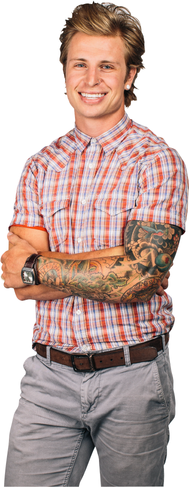

Ben Kasica, Owner/Producer
A St. Louis native, Ben was the lead guitarist for the band Skillet (Atlantic Records) for 10 years. During his time with the band, Skillet sold over 2 million records, was nominated for 2 Grammy awards, won a Dove Award and scored numerous #1 radio singles. He has worked with world-renown producers like Howard Benson, Brian Howes and Paul Ebersold; and has engineered, co-written & produced music for artists such as Corey Taylor of Slipknot & Stone Sour, Skillet, Icon for Hire, We Are Leo and Silverline. He also spearheads the video, film & television divisions of Skies Fall and has produced numerous commercial advertisements and music videos for the likes of Jockey International, E! Television, QVC, Skillet and Kohl’s. Ben enjoys friends, photography, sushi, community service and sports.
Joe Snyder, Owner/Executive Producer
With a varied background in design, music, construction and manufacturing, Joe has served as executive producer for chart-topping artists such as Everett Thomas, Silverline and We Are Leo and also serves in artist development while heading the business affairs of Skies Fall. Joe has been executive producer for numerous video & design projects for clients such as Skillet, Jockey International, and Belletv. He also serves as creative director for the non-profit, LEAP (Leadership and Education for Africa Project). Joe and his wife, Shelly, have 5 children and enjoy art & architecture, music, film & theater, travel, home entertaining and serving in their local church community.
Nick Radovanovic, 1st Engineer/Producer
Nick was the drummer for the band Acceptance (Columbia Records/Militia Group) and guitarist for Hangnail (Tooth & Nail Records). Hangnail was nominated for a Dove Award and two WAMI's. He has been involved with professional engineering and mixing for over 7 years and has worked with producers Howard Benson (My Chemical Romance, Daughtry, Flyleaf) and Aaron Sprinkle (Anberlin, MXPX, Thousand Foot Crutch, Mae). Nick is the 1st Engineer and mixing engineer for Skies Fall Studios along with producing many bands. Nick and his Wife, Sam, reside in the Milwaukee area and enjoy music, friends, family and the Green Bay Packers. Go Pack Go!

Joey Papa, Creative Director
Joey grew up in the shadow of New York City immersed in the arts. After completing his B.A. in Communications from Oral Roberts University, he immediately began working as a road manager and production assistant for Acquire the Fire Productions. Joey has been heavily involved with stage production, acting/performance and the creative process for most of his professional career. Before joining Skies Fall, Joey was a full-time freelance copywriter. Joey resides in Racine, Wisconsin with his wife, Nikki and their 4 children. He enjoys musical theater, poetry, writing, traveling and expanding his mind through inspiration.
Steven Servi, 2nd Engineer/Producer
Steven developed his talent for music and film at a young age and explored those passions with his family, friends and local church. His interest quickly turned toward recording & engineering, so in 2008 Steven enrolled at SAE Institute (Nashville, TN) becoming professionally certified in audio engineering. Since then, Steven has been perfecting his technique with opportunities ranging from internships at The Tracking Room (Nashville, TN)/ 5th Floor Recording (Milwaukee, WI) to head engineer of Acacia Theatre. Since joining Skies Fall in 2010, Steven has become the primary editor while producing and assisting on a variety of music and film projects. Steven loves coloring, reading, and tea-time with his beautiful daughter Brooklyn; he also enjoys collaborating on a variety of artistic projects with family and friends.

Dominic Kegel, Film & Video
Raised in an artistic and nomadic family, Dom got an early start experiencing the different artistic interpretations and perspectives of the world. His love for the arts stems from early roots in music, but has found its current passion in film & video. He and his wife, Susan, have since visited all the continents save Antarctica while living and working in many cities and countries as a freelance video and photography producer AND playing professional football. Dom and Suz have now settled in Racine (of all places!) where they eagerly await the arrival of their first child (and a call from the Green Bay Packers).

Christian Seibert, Producer
Hailing from an east-coast musical family, Christian developed a thirst for culture and music as a youngster. An undesired move to the midwest pushed him further into music where he played and sang in multiple bands. After a short stint in music business school, Christian dropped out to be a tour guitarist with Columbia and Universal Records musicians such as Natasha Bedingfield, Mat Kearney and Kate Voegel. Between tours, he worked with music producers such as Jon Kaplan and Mikal Blue while also working as Creative Director at a multimedia firm with an emphasis on commercial photography and video production. Christian currently utilizes his creativity at Skies Fall both in music and video production. He enjoys writing music, skateboarding and chilling with his puppy, Dex.
Jordan Stocker, Director of Marketing & Sales
Wisconsin born and bred, and raised by business professionals, out of college, Jordan earned a Business Marketing Executive position for a midwest media agency, leading the Digital Products Management and Sales division. After an entrepreneural stint as an independent marketing consultant, Jordan joined the BRP-Evinrude marketing team, spearheading Digital Marketing Projects, social media strategy and copywriting. In joining Skies Fall in 2013, Jordan heads our sales and marketing initiatives from concept to implementation. Jordan is also musician, producer and accomlished DJ, working events such as The Electric Run. He enjoys friends, fitness, and sports and is a closet-nerd, currently enjoying Warhammer and having achieved high world rankings in video games such as The Lord of the Rings: Battle for Middle Earth and Gears of War.

Chino Villatoro, Head Designer/Art Director
Born in Guatemala and raised in the Chicago area, Chino grew up drawing and playing guitar in rock bands. After dropping out of college, he took a design gig at a midwest promotions agency where he got his first taste of production art in the business world. Seeing more potential for expression and growth doing freelance work, Chino launched his own company, Liosvi Image & Design, focusing on design and photography, pioneering dozens of campaigns and shoots while honing his design skills and eye for style and art direction. He joined Skies Fall in 2013 as Head Designer and Art Director. Chino and his lovely wife, Crystal, have two beautiful young daughters. He enjoys professional wrestling, travel, fashion and tattoos.